Префектура Тояма · Хими · винодельня и гостевой дом
SAYS FARM в Хими: вино с собственного виноградника и дом на холме над заливом Тояма
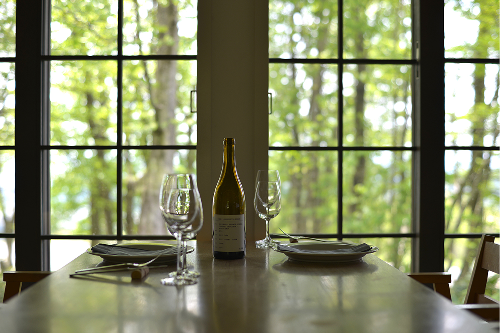
Хими на побережье залива Тояма славится рыбой, но на холме над городом выращивают виноград. Винодельня SAYS FARM делает вино только из своих ягод, кормит гостей местной кухней и сдаёт целый дом одной компании.
Место
Винодельня, которую начал рыбный торговец
Хими лежит на северо-западе префектуры Тояма, у основания полуострова Ното. Город известен зимним бури, желтохвостом из здешних вод, и говядиной Хими-гю. Основа здешней кухни это улов залива Тояма, где издавна ловят рыбу ставными сетями, а мягкий климат и плодородная земля дают всё остальное.
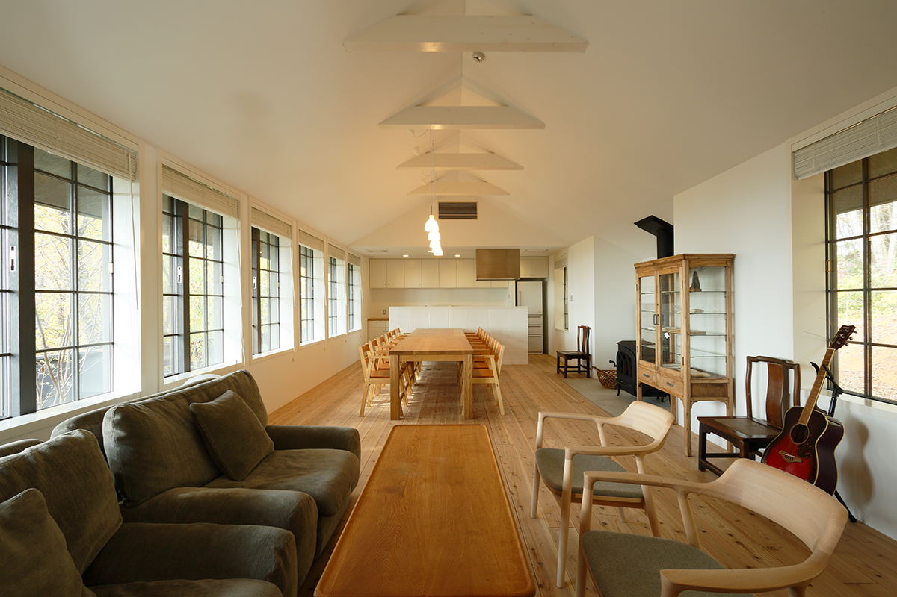
На невысоком холме среди сельских угодий Хими стоит SAYS FARM. Винодельню основал рыбный оптовый дом, который ведёт дело с эпохи Эдо. Её создатели хотели вино, которое подходило бы к местным продуктам, и взялись за виноделие без всякого опыта. Сегодня все вина SAYS FARM делают только из винограда собственных виноградников. Вкус, в котором чувствуется терруар Хими, оценили известные рестораны и винные магазины.
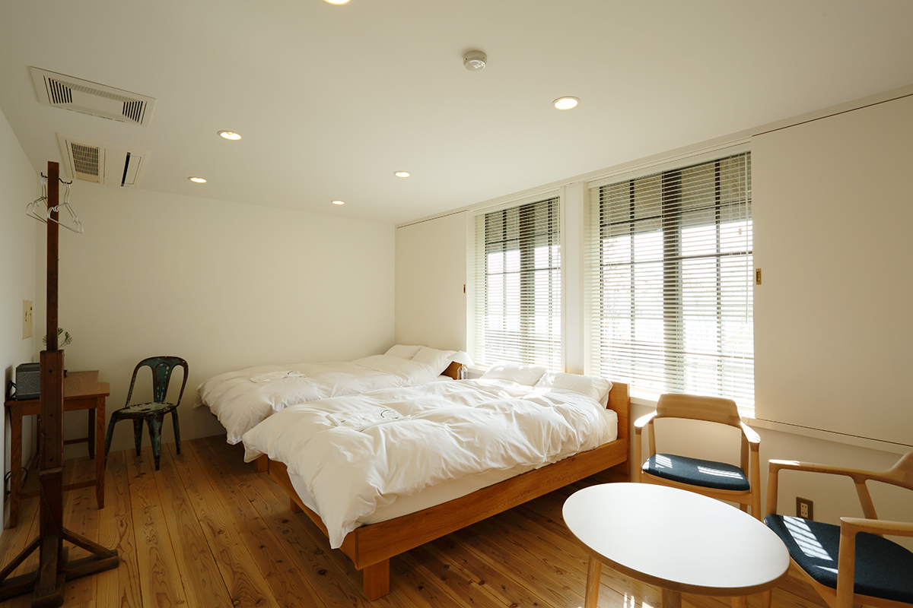
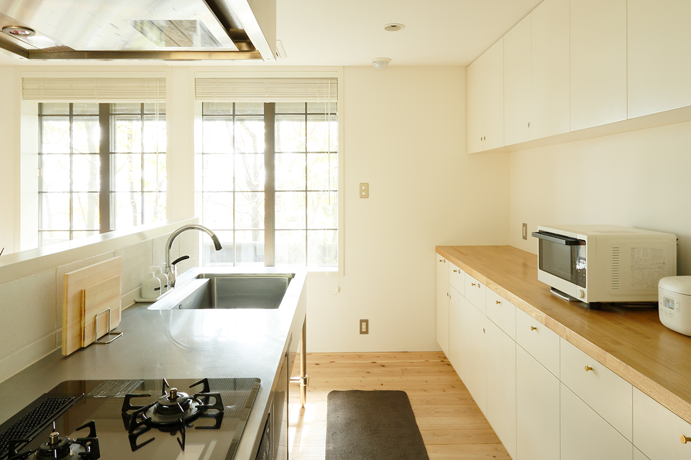
Ночлег
Дом для одной компании
Принцип хозяйства звучит как «от фермы к столу», поэтому SAYS FARM не ограничивается вином: здесь работают ресторан и гостевой дом, который сдают целиком. Дом принимает одну компанию в день, но в нём три спальни и шесть постоянных кроватей. Гостиная тоже просторная, так что ехать сюда удобно семьёй или с друзьями. Ночь с ужином и завтраком стоила от 33 500 иен с налогом и сервисным сбором в 2024 году.
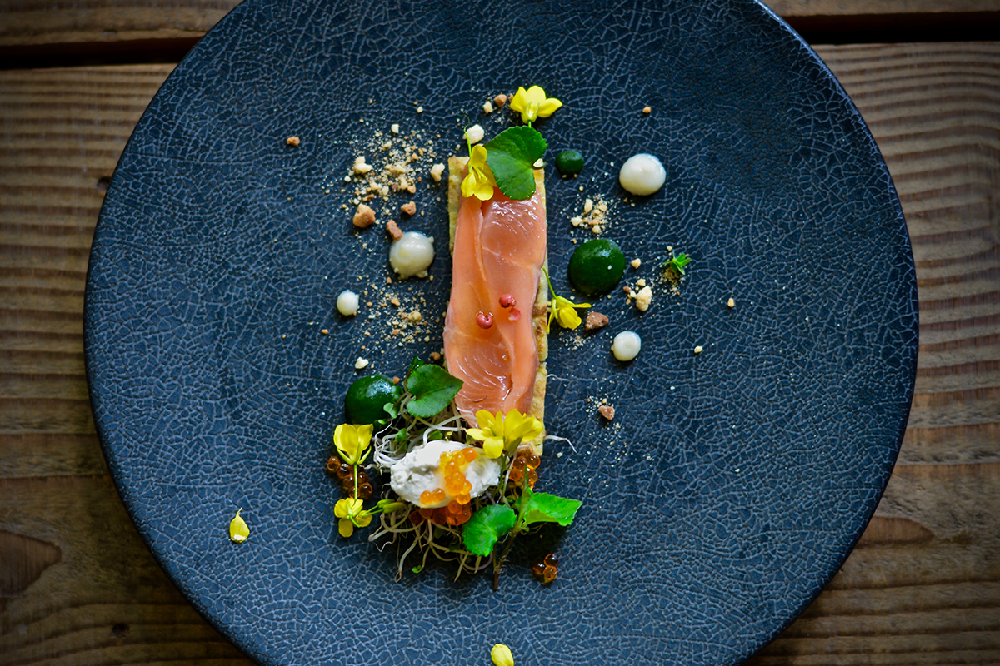
В ресторане подают курс из местных продуктов: свежую рыбу, которую выгружают в порту Хими, травы с огорода хозяйства и яйца кур, которые гуляют на воле. Ужин итальянский, завтрак европейский. В доме есть своя кухня, поэтому можно купить продукты по соседству и приготовить что-то самим. В погребе всегда стоит вино, и открыть бутылку можно в любой момент.
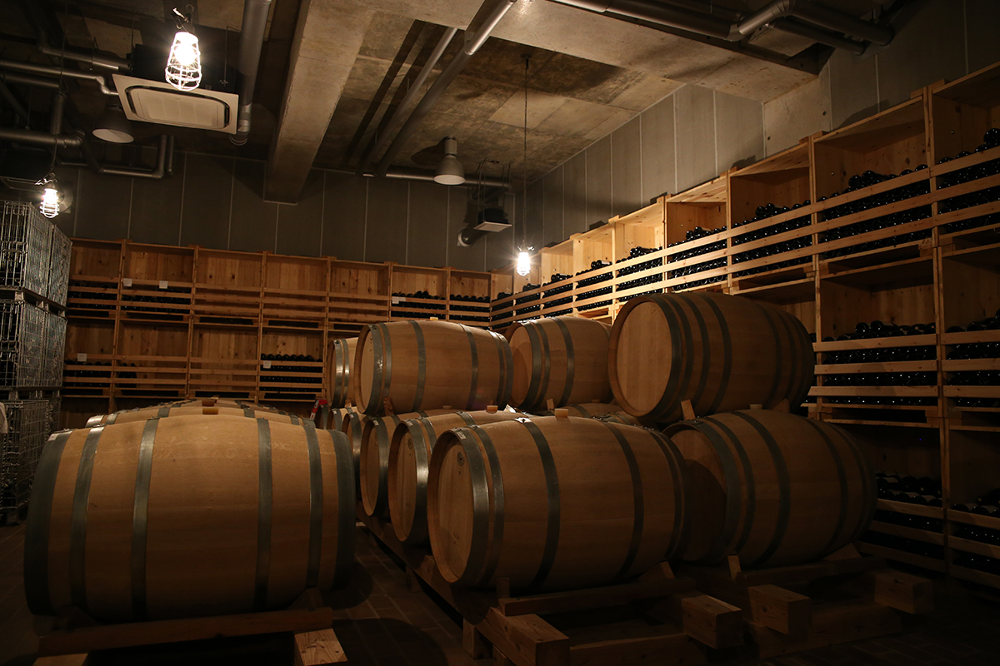
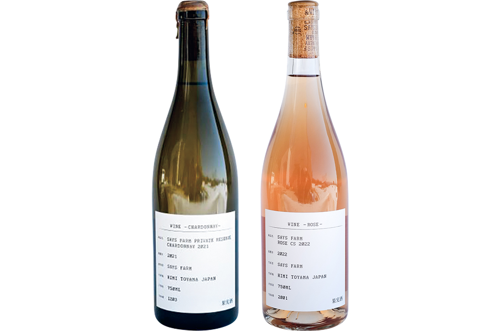
SAYS FARM
- Адрес
- префектура Тояма, Хими, Ёкава, Китаяма, 238
- Телефон
- +81 90-7082-8288
- Номера
- 1 дом
- Цены / Вход
- ночь с ужином и завтраком от 33 500 иен (с налогом и сервисным сбором)
- Заезд / выезд
- 15:00 / 11:00
- Как добраться
- на машине около 10 минут от съезда Хими-Кита скоростной дороги Ноэцу, от станции Хими около 20 минут на машине
- Сайт
- saysfarm.com
Рядом
Куда съездить: советы хозяев
Хими это город свежей рыбы, и многие едут сюда именно за морепродуктами. По другую сторону от моря, в холмах, выращивают рис и много других продуктов. Тем, кто хочет попробовать суши, в SAYS FARM советуют «Суши-я но Дзёко». Днём здесь подают «омакасэ нигири» из 12 кусочков, вечером курс «омакасэ» с закусками. Ресторан отмечен категорией «Биб Гурман» в гиде «Мишлен» по региону Хокурику.
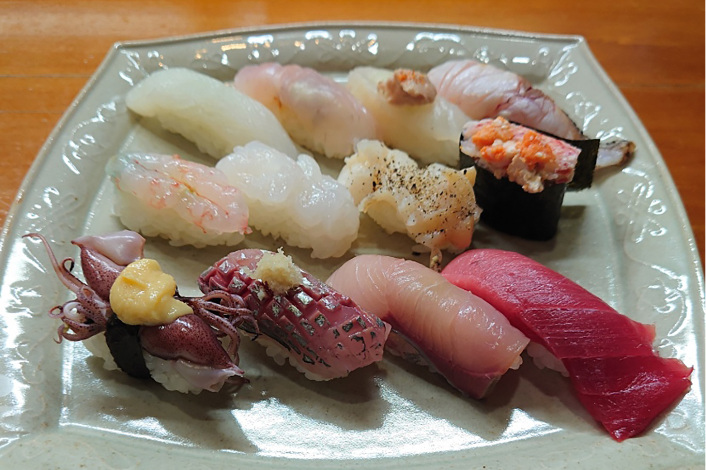
«Суши-я но Дзёко»
- Адрес
- префектура Тояма, Хими, Мадзима, 1-50
- Телефон
- +81 766-72-6167
- Часы работы
- 11:30–14:00, 17:00–22:00
- Выходные
- четверг
За продуктами лучше всего ехать на рынок у рыбного порта, «Хими банъягай». Здесь работают рыбные лавки, лавки сушёной рыбы, зеленщики и сувенирные магазины, и почти всё, чем славится Хими, можно найти в одном месте. Продают и домашние готовые блюда, так что можно просто гулять и пробовать.
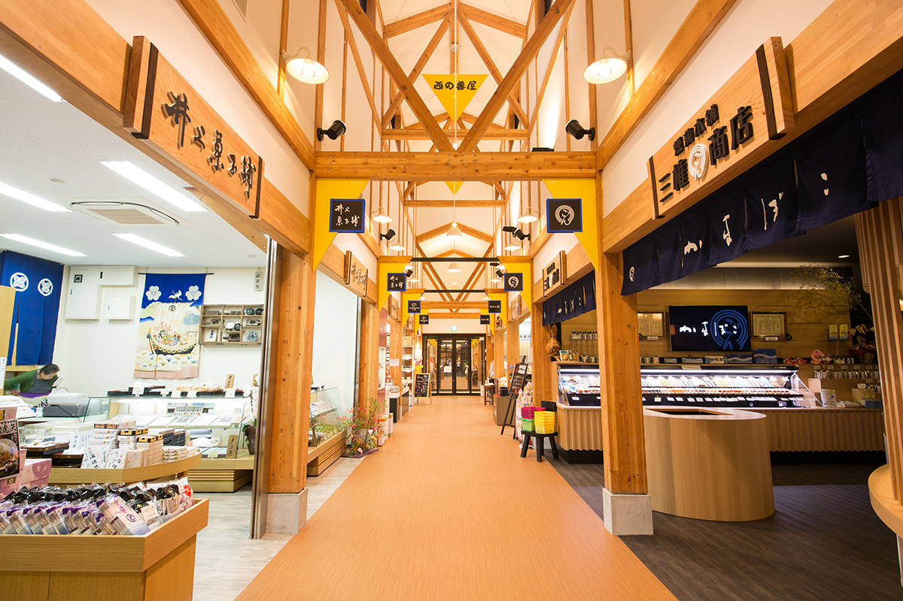
«Хими банъягай»
- Адрес
- префектура Тояма, Хими, Кита-Омати, 25-5
- Телефон
- +81 766-72-3400
- Часы работы
- 8:30–18:00 (в разных лавках по-разному)
- Выходные
- без выходных
Ещё одно классическое место это старая улица Ивасэ в городе Тояма. Ивасэ был портом, куда заходили торговые корабли китамаэбунэ (торговые суда, ходившие вдоль побережья Японского моря), и разбогател на этой торговле. На улице стоят сакэварня «Масуда сюдзотэн», известная своим сакэ «Масуидзуми», одним из главных сакэ Тоямы, мастерские художников по стеклу и небольшие магазины. Хозяева советуют увезти домой что-нибудь из тоямской еды и выпивки.
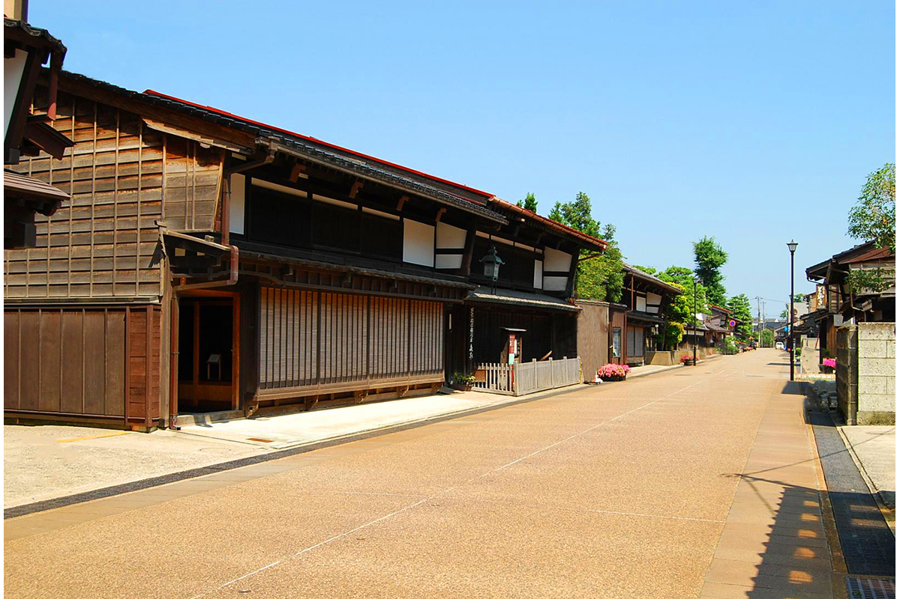
Улица Ивасэ
- Адрес
- префектура Тояма, город Тояма, Хигаси-Ивасэ-мати
- Телефон
- +81 76-439-0800 (Ассоциация туризма города Тояма)
Если в дороге останется время, загляните на побережье Амахараси в городе Такаока, часть квазинационального парка. Это один из самых знаменитых пейзажей Тоямы.
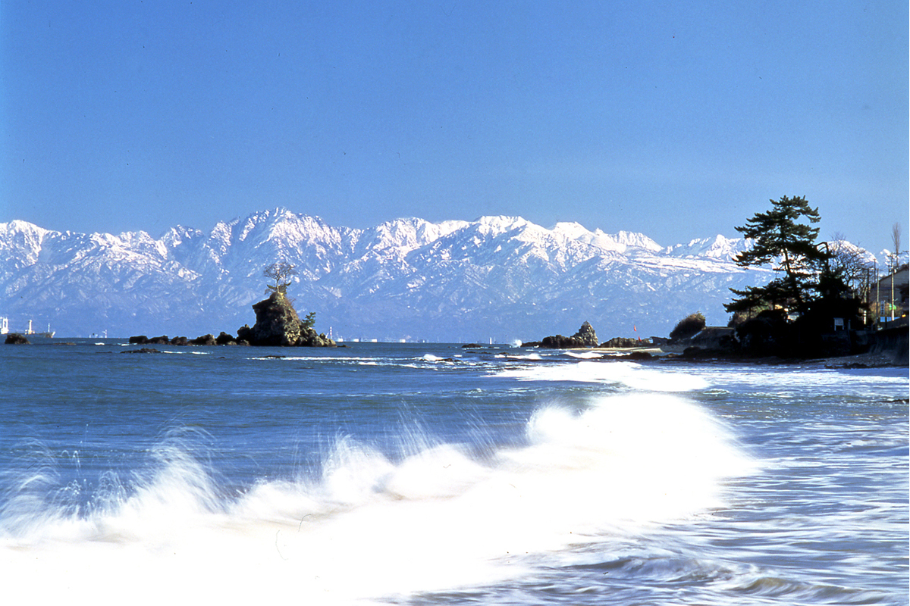
Побережье Амахараси
- Адрес
- префектура Тояма, Такаока, Ота, Амахараси
- Телефон
- +81 766-20-1547 (Ассоциация туризма города Такаока)
Фото: Синъити Кимура, Ассоциация туризма города Тояма, город Такаока.